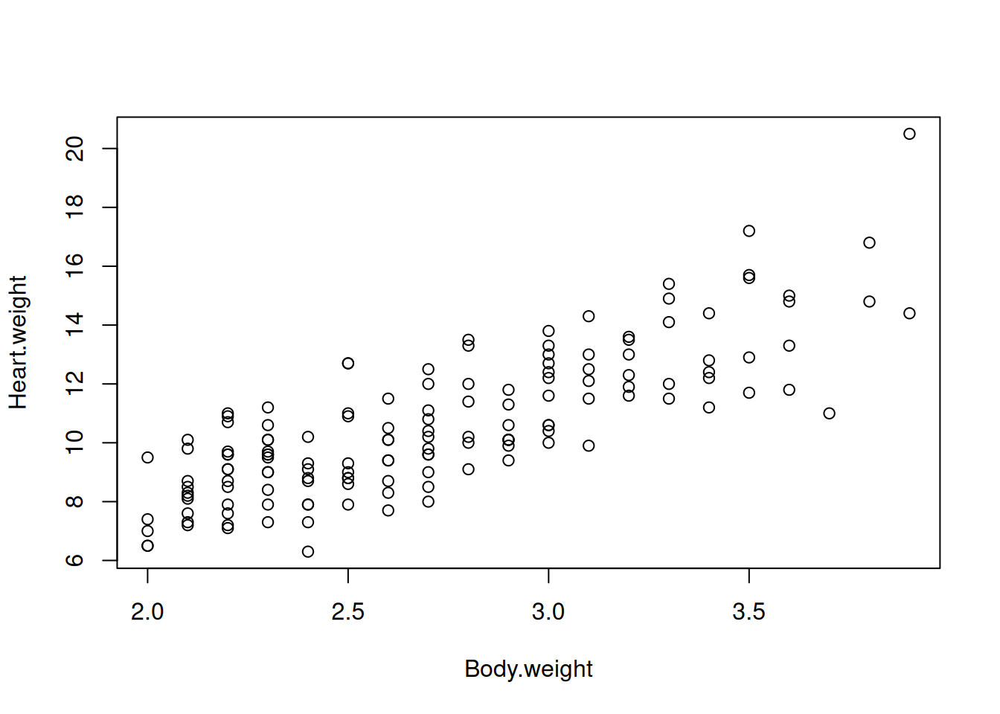
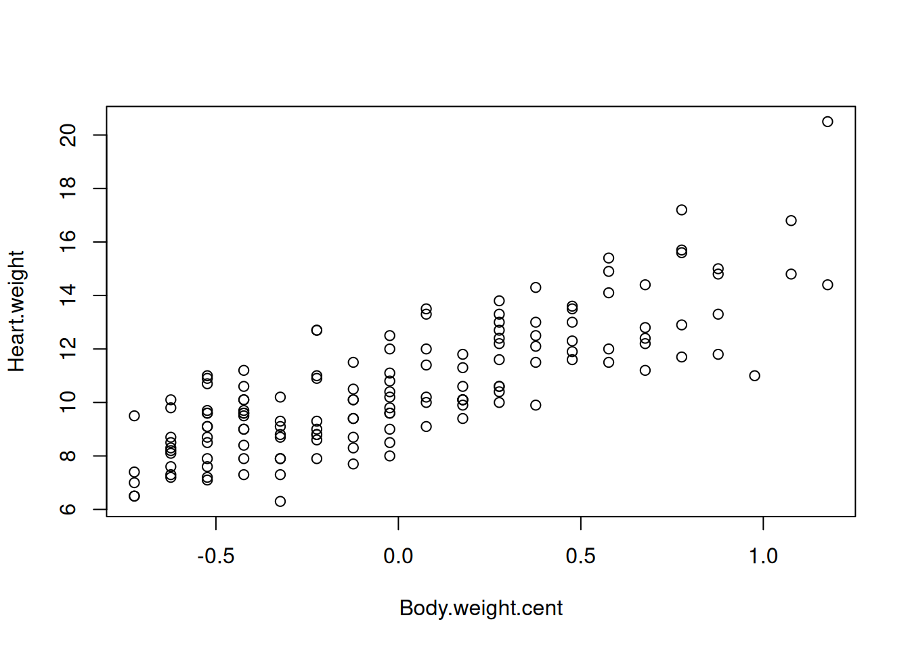
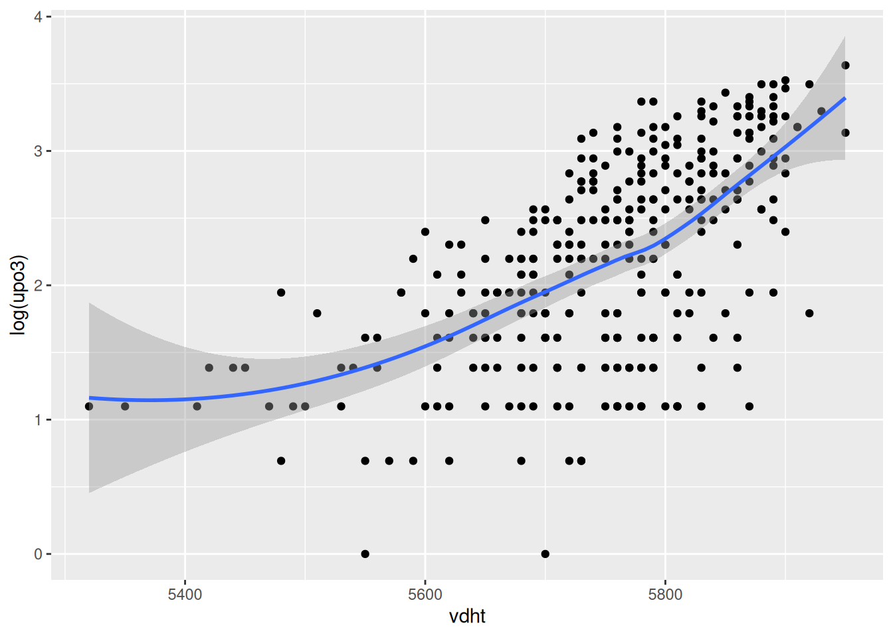
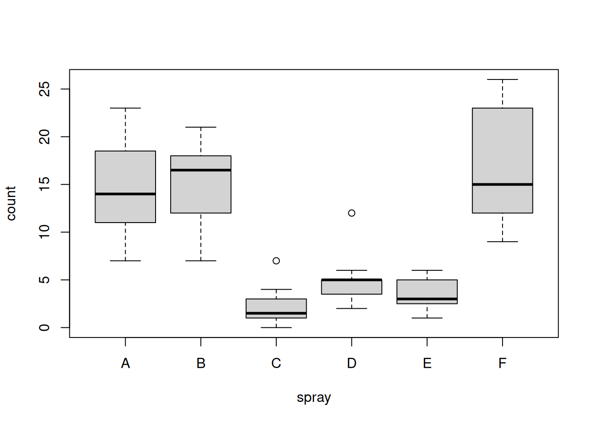

Applied Machine Learning and Predictive Modelling 1 - Exercises
Author
Nils Rechberger
Published
February 21, 2026
Series 1: Linear Models
In class we fitted a model to the “cats” dataset. You may remember that the interpretation of the intercept was somehow problematic. Let’s get the data, visualise it and refit the model again.
Sex Body.weight Heart.weight
1 F 2.0 7.0
2 F 2.0 7.4
3 F 2.0 9.5
4 F 2.1 7.2
5 F 2.1 7.3
6 F 2.1 7.6
Let’s display the effect of Body.weight.
plot(Heart.weight ~ Body.weight, data = d.cats)

The first model we fitted was:
lm.cats <-lm(Heart.weight ~ Body.weight, data = d.cats)
The estimated coefficients of this model are:
coef(lm.cats)
(Intercept) Body.weight
-0.3566624 4.0340627
As mentioned in class, the correct interpretation of the intercept is “a cat with zero body.weight, is expected to have a heart weight of -0.36”. It is obviously nonsensical for two reasons:
There is no cat of zero body weight
A negative prediction for the response variable heart.weight is impossible in reality.
Questions
Question 1
How would you proceed to simplify the interpretation of the intercept in this model? Hint: try to manipulate the predictor body.weight (e.g. by centering it).
Answer
By centering the variable Body.weight, we can get a interpretable intercept.
d.cats$Body.weight.cent <- d.cats$Body.weight -mean(d.cats$Body.weight)plot(Heart.weight ~ Body.weight.cent, data = d.cats)

Question 2
Let’s turn our attention to the model that contains sex too, but no interaction. Reparametrise this model such that “M” is the reference. Hint: use the relevel() function.
Answer
First we check the current level of Sex.
levels(d.cats$Sex)
[1] "F" "M"
We can see that F ist the reference level. To change that:
When the predictor sex was added to the model, the estimated coefficient for ’body.weight‘ slightly changed. Refit both models, show the estimated coefficients and write a sentence that correctly describes their “biological interpretation” of the Body.weight predictor in each model.
Answer
cat("Ceoff for without sex:", coef(lm.cats), "\n")
Ceoff for without sex: -0.3566624 4.034063
cat("Ceoff for with sex:", coef(lm.cats.relevelled))
Ceoff for with sex: -0.4970495 4.075769 0.08209684
First model: By increasing by one unit body weight, we expect an increase of 4.03 in the response variable.
Second model: By increasing by one unit body weight, while keeping all the other predictors fixed, we expect an increase of 4.08 in the response variable.
Question 4
This time we assume that Body.weight was not provided as a continuous variable, but rather as a categorical one. We do this by creating four classes with similar size. With this purpose in mind, we use the quantil() and cut() functions.
Fit a model with Sex and Body.weight.Class and compute a p-value for both predictors.
Answer
lm.cats.bodyClass <-lm( Heart.weight ~ Sex + Body.weight.Class,data = d.cats)drop1(lm.cats.bodyClass, test ="F")
Single term deletions
Model:
Heart.weight ~ Sex + Body.weight.Class
Df Sum of Sq RSS AIC F value Pr(>F)
<none> 354.77 139.84
Sex 1 0.30 355.06 137.96 0.1166 0.7333
Body.weight.Class 3 350.49 705.26 232.78 45.7751 <2e-16 ***
---
Signif. codes: 0 '***' 0.001 '**' 0.01 '*' 0.05 '.' 0.1 ' ' 1
Body.weight.Class seems to play a relevant role, while Sex does not. This is in full agreement with the model we have seen last week where Body.weight was taken as a continuous predictor.
Question 5
Now run some contrasts to see whether all pair of levels of the Body.weight.Class predictor differ from each other. Comment on the results.
Answer
require(multcomp)
Loading required package: multcomp
Loading required package: mvtnorm
Loading required package: survival
Loading required package: TH.data
Loading required package: MASS
Attaching package: 'TH.data'
The following object is masked from 'package:MASS':
geyser
Ask generative AI to provide the interpretation of - the coefficients from a linear model - the p-values from a linear model
and compare it with the definitions you find in the lecture materials. Do you think they are different in any way? Which one is easier for you to understand?
Answer
Prompt:
Provide a interpretation of the coefficients and the p-values from a linear model
Note: Used Gemeni 3 Fast
Answer (excerpt) :
Interpreting a linear model is all about understanding the "story" the data is telling. When you run a regression, you’re essentially trying to find the best-fitting line through your data points[...]. The p-value tells you whether the relationship you see in the coefficient is statistically significant or if it could have just happened by random chance.[...]
The general statement is accurate, although dividing p-values into “significant” and “not significant” is very bad practice.
`geom_smooth()` using method = 'loess' and formula = 'y ~ x'

Question 1
Go through all the other predictors, produce the corresponding graph and comment on the relationship. You may want to say whether the relationship can be assumed to be linear, quadratic or more complex. If you prefer, you may look at a couple of predictors only (as there are many).
Fit a starting model to the data. Start by assuming linearity for the continuous predictors and assume that no interaction is needed. Comment on the results obtained wit the summary function.
Answer
glm.xray <-glm( disease ~ Sex + downs + age + Mray + Fray + CnRay.num,data = d.xray,family ="binomial")summary(glm.xray)
Call:
glm(formula = disease ~ Sex + downs + age + Mray + Fray + CnRay.num,
family = "binomial", data = d.xray)
Coefficients:
Estimate Std. Error z value Pr(>|z|)
(Intercept) -2.08036 0.54863 -3.792 0.000149 ***
SexM 0.88102 0.41952 2.100 0.035723 *
downsyes 16.06989 1455.39759 0.011 0.991190
age 0.04494 0.04092 1.098 0.272151
Mrayyes 0.69668 0.77274 0.902 0.367290
Frayyes 0.14528 0.43966 0.330 0.741064
CnRay.num 0.65058 0.30944 2.102 0.035514 *
---
Signif. codes: 0 '***' 0.001 '**' 0.01 '*' 0.05 '.' 0.1 ' ' 1
(Dispersion parameter for binomial family taken to be 1)
Null deviance: 152.97 on 111 degrees of freedom
Residual deviance: 135.87 on 105 degrees of freedom
AIC: 149.87
Number of Fisher Scoring iterations: 14
Only two of total six model parameters seems to have a effect on the output (wee p-values).
Question 3
Interpret the coefficients of SexM and age.
Answer
While sex seems to have a statistical impact on the model, age does not.
Question 4
Look at the estimated effect of the variable downs and its p-value. Do the results make sense to you? Comment.
Answer
It’s interesting to see that only the parameters SexM and CnRay.num have a statistical impact on the model.
Series 3: GLMs - Poisson
data(InsectSprays)head(InsectSprays)
count spray
1 10 A
2 7 A
3 20 A
4 14 A
5 14 A
6 12 A
Question 1
Use an appropriate function to visualise the data.
Answer
boxplot(count ~ spray, data = InsectSprays)

Question 2
What do you observe on the graph? Are there differences among groups? Is the variability within each group similar?
Answer
We can clearly see that some sprays have a better effect than others.
Question 3
Fit a Poisson model to the data and interpret the regression coefficients.
Call:
glm(formula = count ~ spray, family = "poisson", data = InsectSprays)
Coefficients:
Estimate Std. Error z value Pr(>|z|)
(Intercept) 2.67415 0.07581 35.274 < 2e-16 ***
sprayB 0.05588 0.10574 0.528 0.597
sprayC -1.94018 0.21389 -9.071 < 2e-16 ***
sprayD -1.08152 0.15065 -7.179 7.03e-13 ***
sprayE -1.42139 0.17192 -8.268 < 2e-16 ***
sprayF 0.13926 0.10367 1.343 0.179
---
Signif. codes: 0 '***' 0.001 '**' 0.01 '*' 0.05 '.' 0.1 ' ' 1
(Dispersion parameter for poisson family taken to be 1)
Null deviance: 409.041 on 71 degrees of freedom
Residual deviance: 98.329 on 66 degrees of freedom
AIC: 376.59
Number of Fisher Scoring iterations: 5
Question 4
Check whether the model is overdispersed. If this is the case, fit a quasipoisson model and compare the estimated regression coefficients with those of the Poisson model.
Answer
The residual deviance is about 98 on 66 degrees of freedom. If there were no overdispersion, we would expect the residual deviance to be about 66. We can therefore conclude that the model is overdispersed.
Question 5
Formally test whether there is any evidence that the predictor spray plays a role in the “quasipoisson” model.
Call:
glm(formula = count ~ spray, family = "quasipoisson", data = InsectSprays)
Coefficients:
Estimate Std. Error t value Pr(>|t|)
(Intercept) 2.67415 0.09309 28.728 < 2e-16 ***
sprayB 0.05588 0.12984 0.430 0.668
sprayC -1.94018 0.26263 -7.388 3.30e-10 ***
sprayD -1.08152 0.18499 -5.847 1.70e-07 ***
sprayE -1.42139 0.21110 -6.733 4.82e-09 ***
sprayF 0.13926 0.12729 1.094 0.278
---
Signif. codes: 0 '***' 0.001 '**' 0.01 '*' 0.05 '.' 0.1 ' ' 1
(Dispersion parameter for quasipoisson family taken to be 1.507713)
Null deviance: 409.041 on 71 degrees of freedom
Residual deviance: 98.329 on 66 degrees of freedom
AIC: NA
Number of Fisher Scoring iterations: 5
As expected, there is very strong evidence that spray plays a role.
Question 6
We previously tested whether the predictor spray plays a role. Given that this test was statistically significant, we can dig further and test hypotheses that involve some of the levels of this predictor. Use the glht() function in the multcomp package to test whether the conventional pesticides “C”, “D” and “E” differ from the organic pesticides “A”, “B” and “F”. Test also whether the newly developed pesticides “A” and “B” differ from the old conventional pesticide “F”. Use the “quasipoisson” model to test these hypotheses.
Answer
library(multcomp)glm.insects.quasi <-glm(count ~ spray -1, data = InsectSprays, family = quasipoisson)matrix.of.contrasts <-rbind("organic vs conv"=c(1/3, 1/3, -1/3, -1/3, -1/3, 1/3),"new vs old conv"=c(1/2, 1/2, 0, 0, 0, -1))colnames(matrix.of.contrasts) <-levels(InsectSprays$spray)glht.insects <-glht( glm.insects.quasi,linfct =mcp(spray = matrix.of.contrasts))summary(glht.insects)
Simultaneous Tests for General Linear Hypotheses
Multiple Comparisons of Means: User-defined Contrasts
Fit: glm(formula = count ~ spray - 1, family = quasipoisson, data = InsectSprays)
Linear Hypotheses:
Estimate Std. Error z value Pr(>|z|)
organic vs conv == 0 1.5461 0.1274 12.132 <1e-10 ***
new vs old conv == 0 -0.1113 0.1084 -1.027 0.516
---
Signif. codes: 0 '***' 0.001 '**' 0.01 '*' 0.05 '.' 0.1 ' ' 1
(Adjusted p values reported -- single-step method)
As expected (from the graphical analysis), we can confirm that there is a clear difference between organic and conventional pesticides. However, there is no statistical evidence that the new conventional sprays differ from the old conventional one.
Fit the following four models on the whole dataset. Take a look at the summary-output of the four models. Compute the in-sample AIC-values (= AIC-values of the models fitted on the whole dataset) of all four models. You can use the function AIC(). Based on these in-sample AIC-values, which model would you select as the best performing model?
cat("AIC of glm.xray.simple:", AIC(glm.xray.simple),"\n")
AIC of glm.xray.simple: 149.63
cat("AIC of glm.xray.complex:", AIC(glm.xray.complex) ,"\n")
AIC of glm.xray.complex: 149.759
cat("AIC of glm.xray.very.complex:", AIC(glm.xray.very.complex),"\n")
AIC of glm.xray.very.complex: 158.6927
cat("AIC of gam.xray:", AIC(gam.xray),"\n")
AIC of gam.xray: 148.9194
Based on the AIC, we should go on with the model gam.xray with a value of \(148.9\).
Question 2
Calculate the proportion of correctly classified observations in-sample (that is on the whole data set as well) for all four models. Use a cutoff of 0.5 in the predicted probability for disease. This means that if a patient has a predicted probability of 0.5 or higher, we would predict disease = 1 for this patient. Based on the in-sample proportion of correctly classified observations, which model would you choose?
cat("Prop. of correctly classified observations of glm.xray.simple:", prop.correct.classified(model = glm.xray.simple, newdata = d.xray), "\n")
Prop. of correctly classified observations of glm.xray.simple: 0.625
cat("Prop. of correctly classified observations of glm.xray.complex:", prop.correct.classified(model = glm.xray.complex, newdata = d.xray), "\n")
Prop. of correctly classified observations of glm.xray.complex: 0.6785714
cat("Prop. of correctly classified observations of glm.xray.very.complex:", prop.correct.classified(model = glm.xray.very.complex, newdata = d.xray), "\n")
Prop. of correctly classified observations of glm.xray.very.complex: 0.6785714
cat("Prop. of correctly classified observations of gam.xray:", prop.correct.classified(model = gam.xray, newdata = d.xray), "\n")
Prop. of correctly classified observations of gam.xray: 0.75
Based on the proportion of correctly classified observations in-sample, we should go on with the model gam.xray with a value of \(0.75\).
Question 3
Now implement 5-fold CV to compare the estimated proportion of correctly classified observations on test data. If you want, you can implement repeated 5-fold CV to see how much the estimated proportion of correctly classified observations varies between different 5-fold CVs (different permutation of the rows of the data).